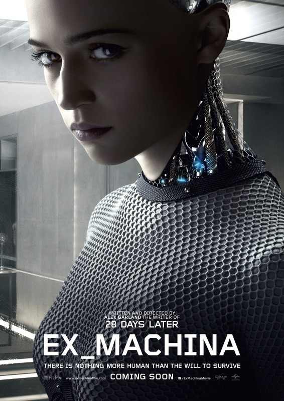

von Oliver Koch

Ex Machina (© Universal Pictures)
(ok) – Auf die Frage, was Existenz und Menschsein bedeutet, gibt die moderne Technologie zahlreiche Antwortmöglichkeiten – ernsthaft beschäftigt hat sich der SF-Film damit jedoch eher wenig in letzter Zeit. Nur alle Jubeljahre ist die Zeit reif für einen wirklich maßgeblichen Beitrag. Wie gut, dass die Zeit mit Ex Machina nun gekommen ist, denn da ist er also: Der ultimative KI-Film. Das starke Regie-Debüt des Newcomers Alex Garland überzeugt sowohl inhaltlich als auch inszenatorisch und wird damit all jenen Vorschusslorbeeren mehr als gerecht.
Der junge Programmierer Caleb (Domhnall Gleeson) landet dank eines Gewinns einer unternehmensinternen Lotterie für eine Woche im Haus seines Firmen-Boss Nathan (Oscar Issac), einem genialen IT-Mastermind. Dieser hat mit Ava (Alicia Vikander) eine KI entwickelt, die in einem künstlichen weiblichen Körper steckt. Calebs Aufgabe: Mittels eines Turing-Tests herausfinden, ob das menschenähnliche Geschöpf ein eigenes Bewusstsein hat und somit die erste nachweisbare künstliche Intelligenz ist.
Einer der intelligentesten Filme der letzten Jahre
Obwohl Ex Machina sein Regiedebüt ist, ist Alex Garland erfahren im Filmgeschäft: Von ihm stammen die Drehbücher zu 28 Days Later und Sunshine sowie Alles, was wir geben mussten. Jeder dieser Filme überzeugte vor allem durch eine starke, stimmige Story, die sich in existenzielle Fragestellungen auffächerten. Zudem schrieb der Autor die Romanvorlage zu The Beach.
Garland näherte sich seinem Stoff eher als Autor denn als Regisseur, und das tut Ex Machina mehr als gut. Konzentriert, brillant geschrieben und überaus clever zieht die Story die ganze Laufzeit den Zuschauer in den Bann. Befeuert wird all dies durch zahlreiche Wendungen, die den Protagonisten wie den Zuschauern in Personalunion mehr und mehr den Boden der Gewissheit unter den Füßen wegreißen. So ist Ex Machina nicht nur einer der intelligentesten und gelehrtesten Filme der letzten Jahre, sondern auch unheimlich, mysteriös und streckenweise mörderisch spannend.
Mit nur vier handelnden und drei sprechenden Protagonisten sowie einem auf den begrenzten Raum eines weitläufigen, labyrinthischen Anwesens gären hier nicht nur eine filmisch meisterlich umgesetzte Geschichte – sondern äußerst tiefgehende Fragen: Was ist Existenz gerade in Hinblick auf Technologien? Ist das Dasein als Mensch rein biologisch determiniert, oder ist Leben auch auf andere – also künstliche – Weise möglich? Und überhaupt: Was heißt schon künstlich in diesem Zusammenhang – ist künstliche Erzeugung vielleicht ein Schritt in der Evolution, und damit ein natürlicher Vorgang? Was ist wann unter welchen Voraussetzungen wie viel wert, und welche ethischen Implikationen und Handlungsoptionen ergeben sich daraus?
Ein geradezu elementarer Anspruch, unter dessen Last der Film keinesfalls zerfällt; im Gegenteil. Ex Machina steigert sich trotz aller kammerspielartiger Ruhe streckenweise zu einem echten Thriller und liefert dazu die besten Zutaten.
Den engagierten jungen Naivling, das reiche wie mächtige Arschloch sowie die geheimnisvolle Schöne. So verschlungen die Wege im Anwesen sind, so viel Winkelzüge macht die Geschichte, bis nicht nur Hauptperson Caleb den Boden unter den Füßen verliert und nicht mehr weiß, woran er ist.
Andeutungen und Stilmittel en gros
Der Storyaufbau schraubt das Gefühl der Beklemmung und Verunsicherung gnadenlos weiter und bedient sich diverser aufeinander abgestimmter Stilmittel.
So wirkt das Anwesen wie eine Versuchsanordnung in einem Labor; nur selten ist die Kamera außerhalb des Gebäudes, so gut wie nie findet das Geschehen draußen statt. Regisseur und Drehbuchautor Garland braucht nur wenige Minuten, um den Film direkt in das Geschehen zu pflanzen. Das Außen ist irrelevant, es gibt nur eines: Das Experiment.
Das Gebäude ist nicht nur Behausung des Firmengründers Nathan, sondern auch dessen Arbeitsplatz – sein Olymp, in dem er nicht nur gottgleich über Leben und Tod herrscht, sondern auch gleich über die Welt: Denn pikanterweise ist seine Firma Blue Book gleich auf doppelte Weise weltbeherrschend: Nicht nur, dass des Namens wegen unzweideutige Anspielungen auf Facebook durchdringen – die Firma ist zudem die größte Suchmaschine der Welt, und kann somit leicht als Google erkannt werden.
Fakt ist, dass der Film hier sowohl ein unmissverständliches politisch-gesellschaftliches Statement setzt und überdies einen kritischen Kommentar abgibt: Nathan ist ein technischer Tausendsassa, ein Milliardär, ein Weltenlenker, ein Schöpfer … - und ein manischer, soziopathischer Säufer mit Gottkomplex und handfesten Arschloch-Attitüden, der jovial tut, hemdsärmelig als Typ statt als Boss rüberkommt und ständig trainiert. Ein Durchschaubarkeit simulierender Geheimnisträger, der viel verbirgt und verschweigt, so auch Absichten und deren Ausmaße.
Das Gebäude simuliert Offenheit und Weite: Große Räume, verglaste Fronten, weite Blickfluchten – größte Transparenz, die im Widerspruch steht zur Abgeschiedenheit des Anwesens, der Geheimhaltung des Projekts. Der Zuschauer spürt diesen Widerspruch und erkennt vielmehr permanente Beobachtung. Die vordergründige Weite nämlich ist sowohl zutritts- als auch zugriffsbeschränkt und ist vollends in der Macht des gottgleichen Besitzers und Schöpfers der KI. Das Haus ist Höhle wie Gipfel gleichermaßen.
Ex Machina ist gespickt mit religiösen Andeutungen: So fehlt im Filmtitel lediglich das Wort Deus. Ein ironischer Deutungsraum, der seinesgleichen sucht.
Die Hauptpersonen haben biblische Namen: Caleb, Nathan und nicht zuletzt natürlich Ava.
Big Brother im Glashaus
Transparenz und Überwachung: Ein auf mehreren Ebenen wichtiges Thema, dem sich auch Ex Machina annimmt. So offen und vordergründig hübsch das Design-Schloss von Nathan auch anmutet, so sehr auf Kumpelhaftigkeit gesetzt wird – nichts läuft im Haus ohne totale und permanente Überwachung. Videokameras, Mikrofone, alles eingesetzt für das Sammeln von Wissen über Geschehen und Personen. Das so einladende Haus mit seiner Weite und Naturzugewandtheit bietet keinen Rückzugsraum. Diesem muss Caleb gleich zu Beginn des Films gar vertraglich zusichern. Seine Woche im Haus im Dienst des Experiments kann nur unter der völligen Aufgabe aller Privatheit und mit der ausdrücklichen Erlaubnis der Nutzung sämtlicher Daten stattfinden – ein Ball, den der Film augenblicklich an den Zuschauer zurückspielt und die Fragen aufwirft: Wie steht es denn mit uns?
Für Nathan sind technologischer Fortschritt und Aufgabe ethischer Normen notwendig miteinander verbunden. Die offene Welt ist nur deshalb offen, um dauerhaft kontrollierende Einblicke einer technischen Elite in das Leben der anderen sicherzustellen – eine Überwachungslogik, die nicht nur an 1984 erinnert, in dem die Macht von einem Staatstyrannen ausging. Hier ist es ein Techno-Papst, dem es gleich um das ganze intelligente Leben geht.
All dies lässt unentwegt die Hirnwindungen der Zuschauer brummen, auch und vor allem nach dem Ende.
Ex Machina und die Macht der Bilder
Trotz des limitierten Raums und der Konzentration auf Dialoge ist Ex Machina definitiv ein fürs Kino konzipierter Film, der seine ganze Wucht erst auf der Leinwand entfaltet. Nicht nur die Kameraarbeit maßgeblicher Träger der Geschichte, auch das Set-Design. Ex Machina auf einem kleinen Monitor zu sehen ist in etwa genauso als nähme man Farbfilmen die Farbe. Die Blickwinkel in die Gänge, Räume und Reaktionen sind es wert, groß angesehen zu werden.
Da ist er also wirklich, der ultimative KI-Film: Brandaktuell und auf der Höhe der Zeit, ist er wie kein anderer Film ein bedeutendes Update in der filmischen Auseinandersetzung mit seinem Motiv. Kein anderer Film ist der möglichen Zukunft in aller Schlüssigkeit näher als Ex Machina. Ein Film, der auch bei mehrmaligem Sehen eher gewinnt als verliert, und in dem Andeutungen, Möglichkeiten und Gefahren mitschwingen, die die Welt bereits heute berühren und in überschaubarer Zukunft auch stärker beschäftigen werden.
Der Cast wird uns in diesem Jahr übrigens noch einmal begegnen: Beide männlichen Hauptdarsteller haben Rollen im kommenden Star Wars: Das Erwachen der Macht. Ava-Darstellerin Alicia Vikander werden wir in Guy Ritchies Solo für U.N.C.L.E. wieder sehen. Regisseur Garland wird als nächstes das Drehbuch zur Videospiel-Adaption HALO schreiben sowie den Film Annihilation inszenieren.
Um die Karrieren muss man sich also keine Gedanken machen.
Weiterführende Informationen zum Thema:
http://www.exmachina-film.de/ - Offizielle Homepage
https://www.youtube.com/watch?v=WR46DcBXIp8 – Trailer (deutsch)